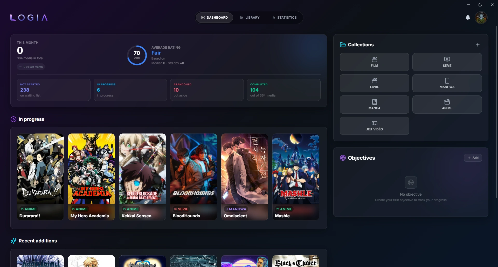
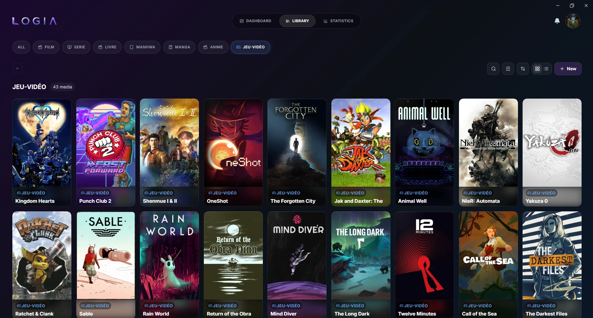
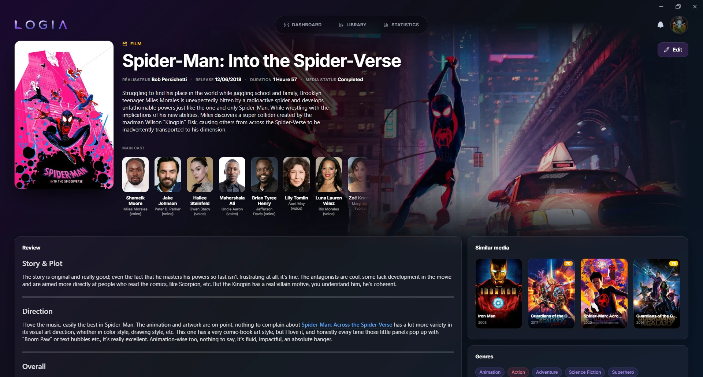
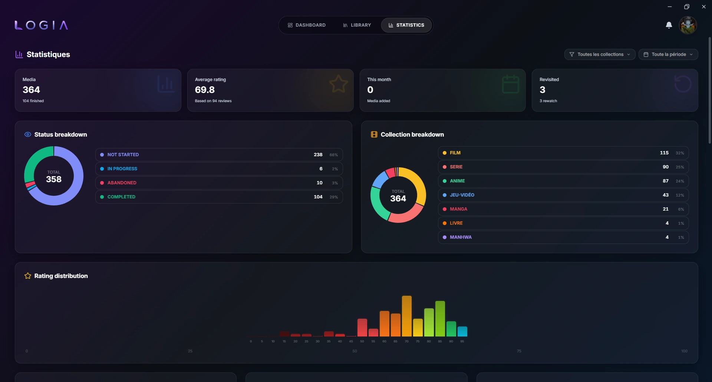
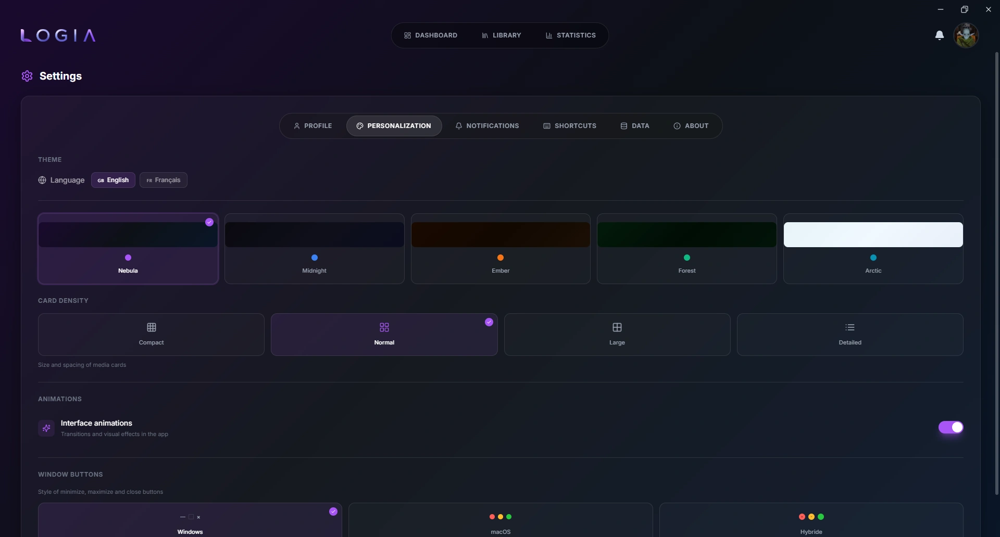
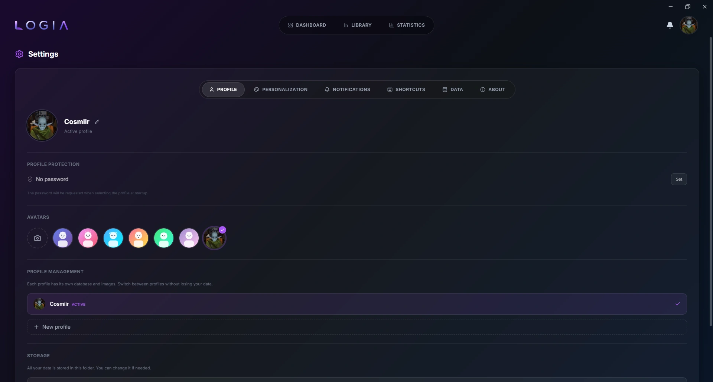

Keep track of everything you love: movies, series, anime, games, books, music, board games, and so much more, in one fully customizable, offline app.

Keep track of everything you love: movies, series, anime, games, books, music, board games, and so much more, in one fully customizable, offline app.
Logia is an offline-first desktop app designed to track and organize everything you love. It starts as a clean, blank canvas with zero predefined categories, allowing you to build custom collections tailored exactly to your needs: movies, video games, board games, theater, music, or even personal travel logs and restaurants.
To save time, you can enable optional API enrichment per collection. Logia automatically pre-fills public metadata (cover art, creators, genres, release dates) using sources like TMDB, AniList, IGDB, MusicBrainz, and more. Any API keys you provide stay locally on your machine.
Public details are automated, but your personal experience remains entirely yours: ratings, notes, reviews, progression, and logged dates are yours to fill or leave empty. Everything is stored locally in a private SQLite database on your machine.






Visit the Releases page and download the installer for your platform:
| Platform | File |
|---|---|
| Windows | Logia_x.x.x_x64-setup.exe (NSIS) or Logia_x.x.x_x64_en-US.msi |
| macOS | Logia_x.x.x_universal.dmg (Intel + Apple Silicon). Not code-signed: on first launch, right-click → Open (or xattr -dr com.apple.quarantine /Applications/Logia.app) to bypass Gatekeeper. |
| Linux | Logia_x.x.x_amd64.AppImage (recommended, supports auto-updates), .deb, or .rpm |
Distributed under the MIT License. See LICENSE for details.
Copyright (c) 2026 Cosmiir
Logia is free and open source, built and maintained in my spare time. If it's useful to you, a coffee helps keep it going: